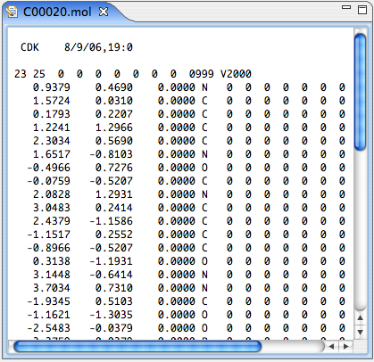

The text editor is a basic text editor for editing text. It is used for text files and UNKNOWN resources not recognized by any plugin. It can also always be opened by right-clicking a resource in the BioResource Navigator and selecting "Open With... -> TextEditor". The TextEditor is, as all Editors in Bioclipse, hooked up to global actions such as Copy, Paste, Undo, Redo, Select all, Find etc.